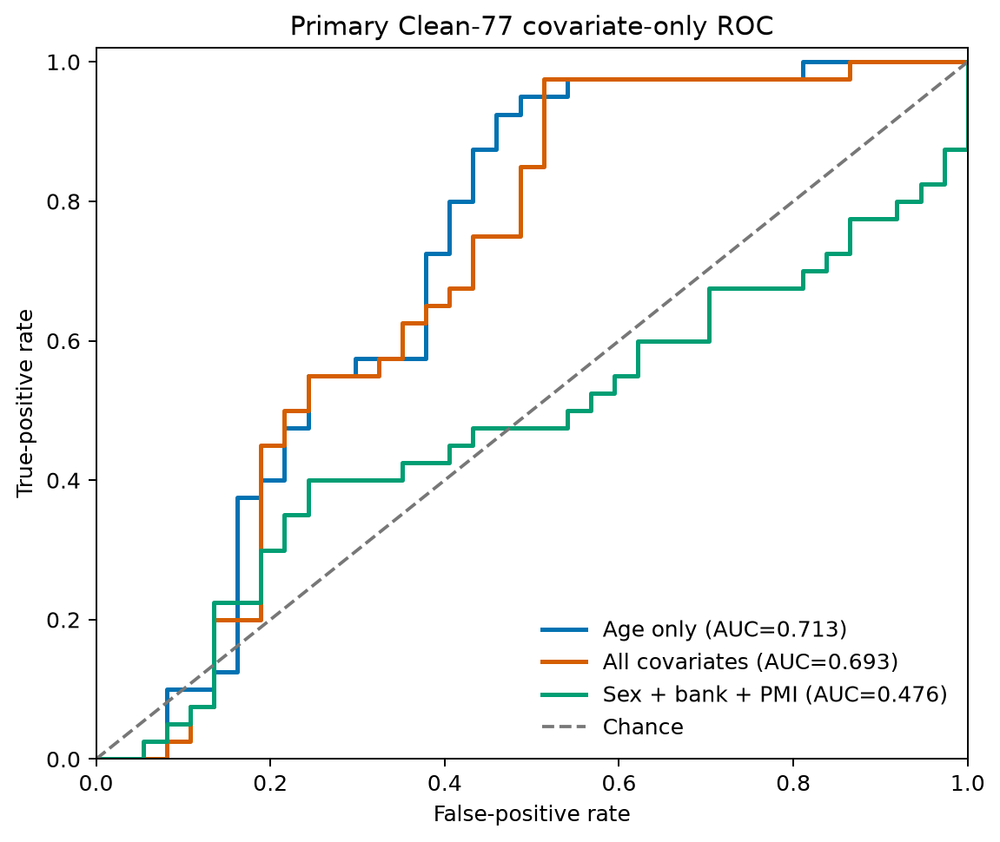
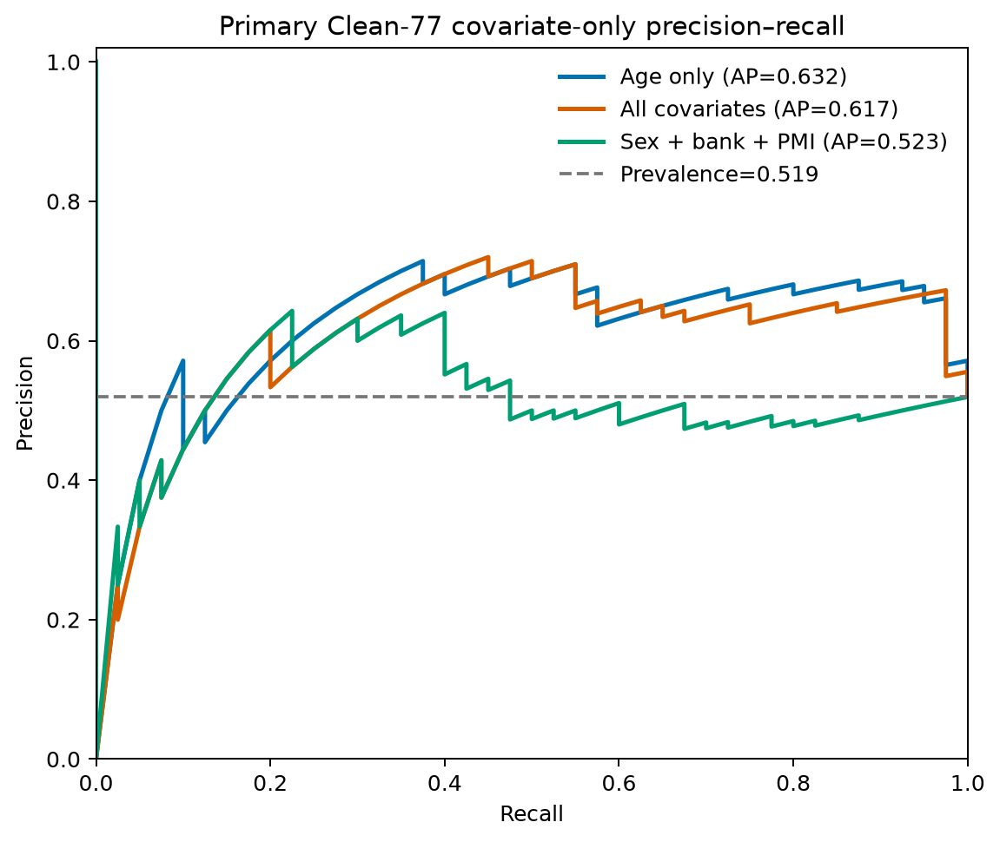
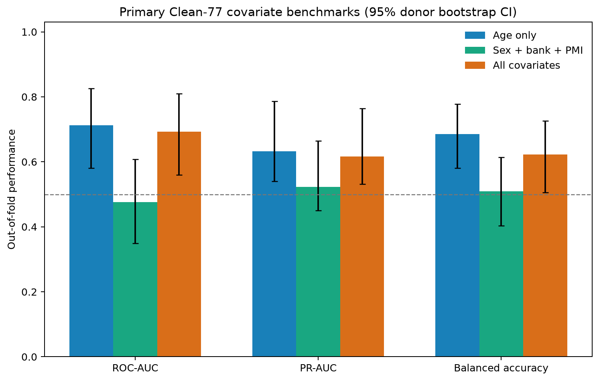
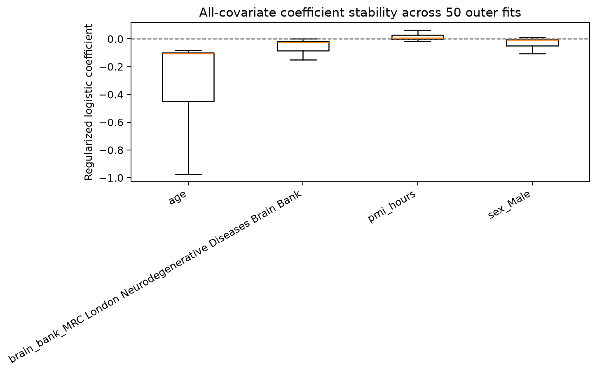

Leakage check: Every preprocessing fit and hyperparameter decision used inner/outer training donors only. Each donor received one outer-test prediction per repeat.
Interpretation: These are confounding benchmarks, not molecular biomarkers. A later methylation model must improve over the all-covariate benchmark to claim added molecular predictive value.
| model | roc_auc_donor_mean_oof | roc_auc_bootstrap_low | roc_auc_bootstrap_high | pr_auc_donor_mean_oof | balanced_accuracy_donor_mean_oof | mcc_donor_mean_oof | brier_score_donor_mean_oof |
|---|---|---|---|---|---|---|---|
| age_only | 0.7128 | 0.5804 | 0.8257 | 0.6319 | 0.6848 | 0.3765 | 0.2409 |
| all_covariates | 0.6932 | 0.5601 | 0.8095 | 0.6166 | 0.6223 | 0.2449 | 0.2323 |
| no_age_covariates | 0.4757 | 0.3486 | 0.6082 | 0.5233 | 0.5098 | 0.0199 | 0.2559 |
| model_a | model_b | roc_auc_difference_a_minus_b | bootstrap_low | bootstrap_high | bootstrap_two_sided_p | bootstrap_iterations |
|---|---|---|---|---|---|---|
| all_covariates | age_only | -0.0196 | -0.0676 | 0.0243 | 0.4348 | 2000 |
| all_covariates | no_age_covariates | 0.2176 | 0.0662 | 0.3595 | 0.0020 | 2000 |
| age_only | no_age_covariates | 0.2372 | 0.0689 | 0.4028 | 0.0060 | 2000 |



| feature | coefficient_mean | coefficient_sd | positive_fraction | odds_ratio_median |
|---|---|---|---|---|
| age | -0.2590 | 0.2512 | 0.0000 | 0.8982 |
| brain_bank_MRC London Neurodegenerative Diseases Brain Bank | -0.0861 | 0.1456 | 0.0400 | 0.9758 |
| pmi_hours | 0.0229 | 0.0490 | 0.7000 | 1.0082 |
| sex_Male | -0.0396 | 0.0858 | 0.1600 | 0.9909 |
